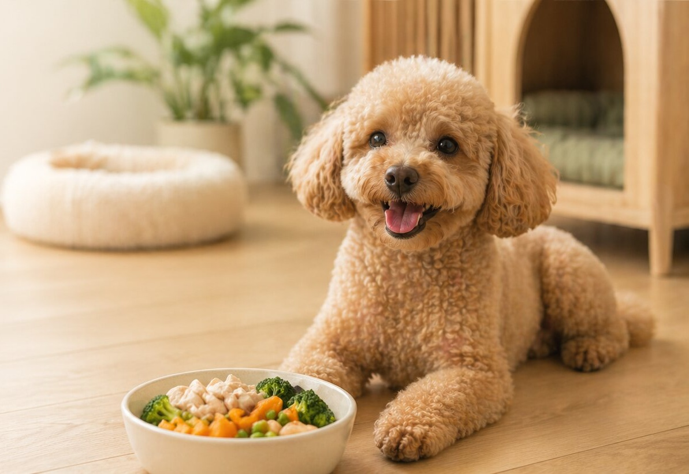
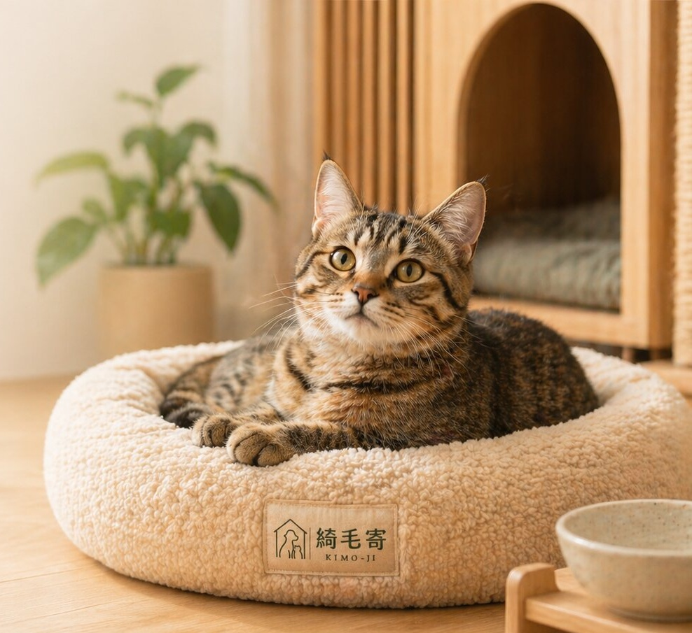
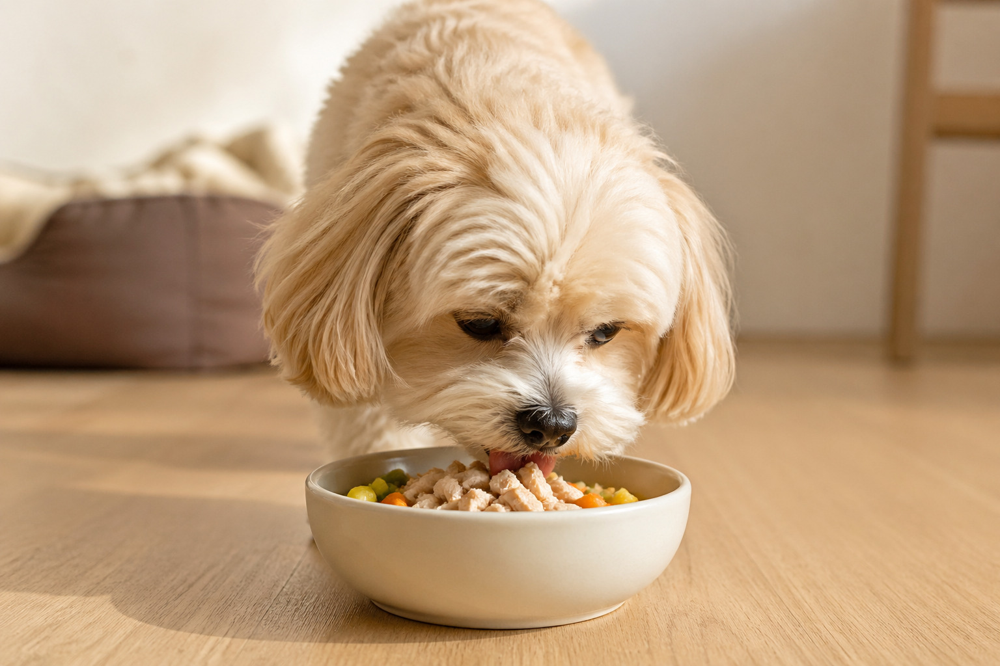
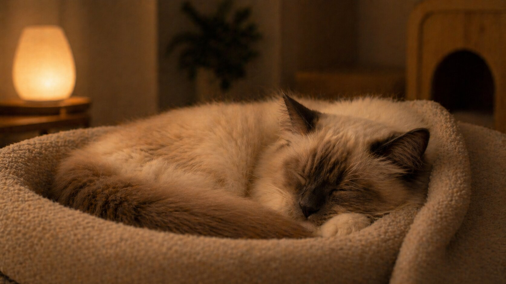
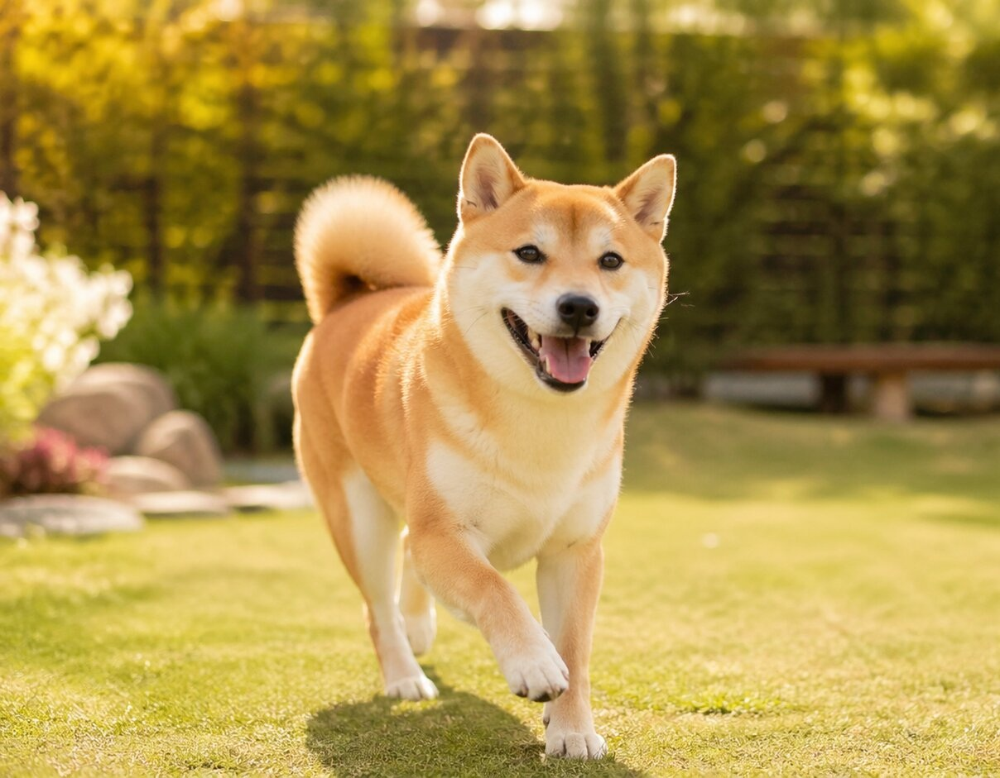

PET HOTEL & CARE
讓每一次外宿
都像在家一樣安心
安心住宿 × 健康鮮食 × 專屬紀錄，替毛孩保留熟悉的生活節奏。

PET HOTEL & CARE
安心住宿 × 健康鮮食 × 專屬紀錄，替毛孩保留熟悉的生活節奏。

DOG & CAT FRIENDLY
依照毛孩習性安排休息空間，降低陌生環境帶來的緊張感。

DAILY CARE RECORD
照片、飲食與作息回報，讓家長隨時掌握毛孩狀態。

食慾正常｜情緒穩定
外宿時，毛孩可能會遇到…
環境改變影響進食
陌生空間容易焦慮
飲食與作息變動
需要安靜熟悉節奏
PET DAILY MOMENTS
吃飯、休息、活動與回報，讓家長更具體感受到毛孩在綺毛寄的一天。

依照安排準備餐點，讓毛孩在熟悉節奏裡安心吃飯。

乾淨明亮的住宿環境，讓牠有自己的放鬆小角落。

透過互動與活動時間，舒緩外宿的不安與無聊感。

照片與狀態同步回傳，讓家長在外也能安心追蹤。
STAY PLAN
有標準房、精緻房、豪華房，依照體型挑選適合入住方案。
健康住宿套餐含每日一餐健康鮮食與入住狀態回報，活動期間預約更划算。(此房型為小型寵物+標準房)
以單餐方式彈性加購，適合想先從鮮食體驗開始的家長。